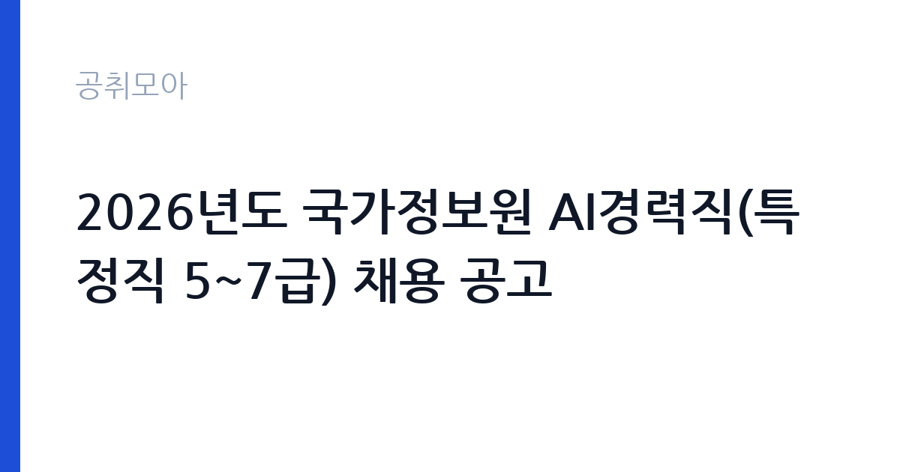

[국가기관] 2026년도 국가정보원 AI경력직(특정직 5~7급) 채용 공고
국가정보원 · 전국 · 마감 2026-11-16 (D-28) · 출처 나라일터

한눈에 보는 모집 조건
| 기관 | 국가정보원 |
|---|---|
| 공고명 | 2026년도 국가정보원 AI경력직(특정직 5~7급) 채용 공고 |
| 고용형태 | 정규직 |
| 근무지 | 전국 |
| 게시일 | 2026-10-19 |
| 마감일 | 2026-11-16 (D-28) |
지원자격, 이렇게 읽으세요
- 특정5~7급 0명
- 접수 ~2026-11-16 마감
- 세부 조건은 원문 공고문 확인
특정직 공무원은 국가공무원법상 직무의 전문성과 특수성을 인정해 별도로 운영하는 직군입니다. 국정원의 AI 경력직은 이 가운데 인공지능 분야 전문 인력을 경력경쟁 방식으로 선발하는 트랙입니다. 응시자격의 핵심은 학위와 경력입니다. 직급이 5급부터 7급까지 열려 있다는 것은, 경력 연수에 따라 임용 직급이 달라진다는 뜻입니다. 관련 분야 학위와 실무 경력이 함께 요구되는 것이 일반적이며, 세부 기준은 공고문에 표로 제시됩니다. 국정원 채용은 신원조사와 보안서약 절차가 추가되는 점도 미리 알고 계셔야 합니다. 접수 전에 자격요건표와 제출서류 목록을 반드시 대조하십시오.
이 공고의 포인트
이 공고의 매력은 세 가지입니다. 첫째, AI 분야 경력직을 특정직 공무원으로 뽑는다는 점입니다. 민간에서 쌓은 경력을 공직에서 그대로 활용할 수 있는 드문 경로입니다. 둘째, 접수 기간이 깁니다. 11월 16일까지로, 다른 공고에 비해 준비 시간이 넉넉합니다. 셋째, 직급 폭이 넓습니다. 5급부터 7급까지 열려 있어 경력 연수에 따라 적정 직급으로 지원할 수 있습니다. 다만 국정원 특성상 전형 과정에 보안 관련 절차가 붙고, 근무지와 직무가 공개되지 않는 부분이 있습니다. 이 점을 감안한 지원 결정이 필요합니다.
전형은 어떻게 진행되나
전형은 서류전형을 시작으로 필기와 면접, 신원조사 순으로 진행되는 것이 일반적입니다. 서류에서는 학위와 경력이 AI 직무와 얼마나 직접 연결되는지를 봅니다. 필기는 전공 지식과 논리·표현 능력을 평가하는 방식으로 이뤄지며, 면접에서는 전문성과 조직 적합성을 확인합니다. 국정원 채용은 다른 공공기관과 달리 신원조사와 보안서약 절차가 추가됩니다. 최종합격 후 임용까지 시간이 걸릴 수 있으므로, 재직 중이라면 일정을 여유 있게 잡으십시오. 세부 전형 방식과 일정은 원문 공고문에 안내돼 있습니다.
이런 분께 추천해요
- AI·데이터 분야 실무 경력이 있는 분 — 경력경쟁 채용입니다
- 특정직 공무원 신분으로 전문성을 살리고 싶은 분
- 보안 절차와 비공개 직무 조건을 받아들일 수 있는 분
지원 전 체크리스트
- 학위와 경력 요건이 지원 직급(5~7급) 기준에 맞는가
- 경력 증명서로 입증 가능한 경력만 기재했는가
- 신원조사와 보안서약 절차를 감안한 지원 결정을 했는가
- 마감일 2026-11-16 이전에 접수했는가
모집 일정과 제출 타이밍
마감은 2026년 11월 16일입니다. 접수 기간이 길어 준비할 시간은 충분하지만, 전형 단계가 많아 전체 일정은 길게 이어집니다. 권장 일정은 첫 주에 공고문과 직무기술서를 읽고 지원 직급을 확정하는 것입니다. 둘째 주와 셋째 주에는 경력기술서와 자기소개서를 작성하고, 마지막 주에 필기 대비를 하는 것이 현실적입니다. 신원조사에 시간이 걸리므로 최종합격 후 임용까지 여유를 두고 계획을 세우십시오.
직무 이해하기: 국가기관
국가정보원의 AI 경력직은 정보 수집과 분석 과정에 인공지능 기술을 적용하는 업무를 맡습니다. 구체적으로는 대규모 데이터 처리와 분석 모델 개발, 자연어 처리 기반 정보 분석, 이상 징후 탐지, 분석 시스템 구축과 운영 등이 핵심입니다. 직급에 따라 연구·개발과 기획·관리의 비중이 달라집니다. 업무 특성상 보안이 엄격하게 적용되고, 사용하는 데이터와 시스템에 대한 접근 권한이 제한됩니다. 외부 학회나 논문 발표에도 제약이 따르므로, 연구자로서의 공개 활동을 이어가고 싶은 사람에게는 맞지 않을 수 있습니다.
자기소개서 작성 팁
이 공고의 자기소개서는 전문성과 공직 적합성을 함께 보여줘야 합니다. 첫 문단에 본인의 AI 분야 전문 영역과 지원 직급을 연결해 쓰십시오. 본론은 프로젝트 단위로 구성합니다. 문제 정의, 사용한 모델과 데이터, 성과 지표, 실제 적용 결과를 순서대로 적으십시오. 수치가 있으면 반드시 붙이십시오. 연구 경력이 있다면 논문과 특허도 실적으로 정리하면 좋습니다. 마무리에는 공공 영역에서 AI를 활용해 해결하고 싶은 문제를 제시하십시오. 국정원이라는 조직의 특성상 과장된 표현보다 정확하고 절제된 서술이 유리합니다.
면접 준비 포인트
면접은 전문성 검증과 적합성 평가로 나뉩니다. AI 분야의 기술 질문이 깊이 들어올 수 있으므로, 본인이 수행한 프로젝트의 모델 선택 이유와 한계를 설명할 수 있어야 합니다. 또한 조직 적합성과 보안 의식에 대한 질문이 붙습니다. 공직에서 지켜야 할 의무와 비밀 유지에 대한 인식을 확인합니다. 답변은 결론부터 말하고, 모르는 부분은 모른다고 밝히는 편이 안전합니다. 지원 직급에 맞는 경력 연수와 역할을 일관되게 설명하는 것도 중요합니다.
급여·근무조건 읽는 법
보수는 특정직 공무원 보수 규정에 따라 정해지며, 직급과 호봉에 따라 결정됩니다. 5급부터 7급까지 열려 있으므로 지원 직급에 따라 초임 수준이 달라집니다. 구체적인 금액과 수당 구성은 원문 공고문의 처우 항목에서 확인해야 합니다. 특정직 공무원은 일반직과 보수 체계가 일부 다르고, 직무 특성에 따른 수당이 별도로 적용될 수 있습니다. 정규직 공무원 신분이므로 정년이 보장되고, 연금과 4대 보험이 공무원 기준으로 적용됩니다. 실수령액은 직급과 부양가족 수에 따라 차이가 크므로, 표기된 보수만으로 비교하기는 어렵습니다.
자주 묻는 질문
- 경력이 얼마나 필요한가요?
직급이 5급부터 7급까지 열려 있어 경력 연수에 따라 지원 직급이 달라집니다. 구체적인 학위·경력 기준은 원문 공고문의 자격요건표를 확인하십시오. - 정규직인가요?
특정직 공무원으로 임용되는 정규직 신분입니다. 다만 신원조사와 보안서약 등 별도 절차가 추가됩니다. - 근무지는 어디인가요?
공고에 전국으로 표시돼 있습니다. 세부 근무지는 채용 절차에서 안내되며, 직무 특성상 공개되지 않는 부분이 있습니다.
함께 보면 좋은 공고
[국가기관] 2026년 제5회 국립부곡병원 의무직 공무원 경력경쟁채용시험 공고 — 마감 2026-10-30[국가기관] 한국체육대학교 대학회계무기직원(미화원, 1명) 채용 공고 — 마감 2026-10-30[국가기관] 2026년 수도권대기환경청 기간제근로자 채용 공고 — 마감 2026-10-28출처: 나라일터 공개정보를 바탕으로 공취모아가 정리한 안내글입니다. 모집 조건·일정은 변경될 수 있으니 지원 전 반드시 원문 공고문을 확인하세요. 본 글은 정보 제공용이며 합격을 보장하지 않습니다.